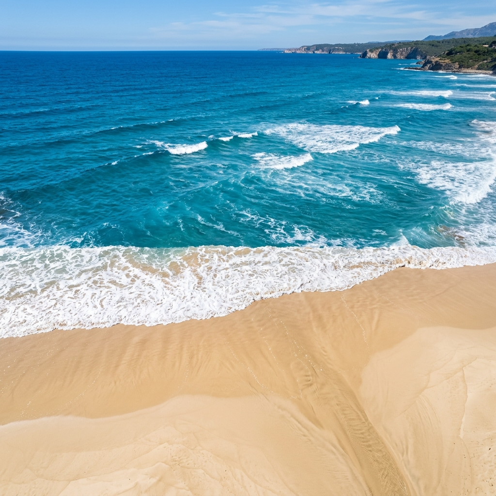

Deniz & Dalga Durumu Raporu
Dünya genelindeki deniz ve plajlara ait güncel dalga yüksekliği, deniz suyu sıcaklığı ve rüzgâr verilerini sorgulayın.

Konyaaltı Plajı
Sabah saatlerinde sakin bir deniz beklenirken, öğleden sonra rüzgarın hızlanmasıyla dalga boyu hafifçe yükselebilir.
Hava tahmin kaynaklarımızın (GFS, ECMWF, ICON) rüzgâr ve hava tahminlerindeki uyum düzeyi hesaplanmıştır. Uyum seviyesi tahmin güvenilirliğini gösterir.
| Kaynak Model | Rüzgâr Hızı | Sıcaklık |
|---|---|---|
| ECMWF (Avrupa) | 12 km/h | 29°C |
| NOAA GFS (ABD) | 14 km/h | 28°C |
| DWD ICON (Almanya) | 13 km/h | 29°C |
Bu platformda görüntülenen tüm veriler, Open-Meteo ve bağlı meteorolojik modeller (NOAA GFS, ECMWF IFS, DWD ICON, Copernicus) aracılığıyla sağlanan tahmini ve simüle edilmiş verilere dayanmaktadır.
Deniz şartları rüzgâr, dip yapısı, akıntılar ve anlık hava olayları nedeniyle çok hızlı şekilde değişkenlik gösterebilir.
Bu sayfada yer alan hiçbir bilgi "yüzmek tamamen güvenlidir" veya "yüzmeye uygun değildir" şeklinde kesin bir güvenlik tavsiyesi içermemektedir.
Sahildeki yerel cankurtaran uyarıları, sahil bayrakları, yasaklar ve resmi meteoroloji uyarıları her zaman birinci derecede önceliklidir ve takip edilmelidir.
Lütfen can güvenliğinizi tehlikeye atacak durumlardan kaçınınız.